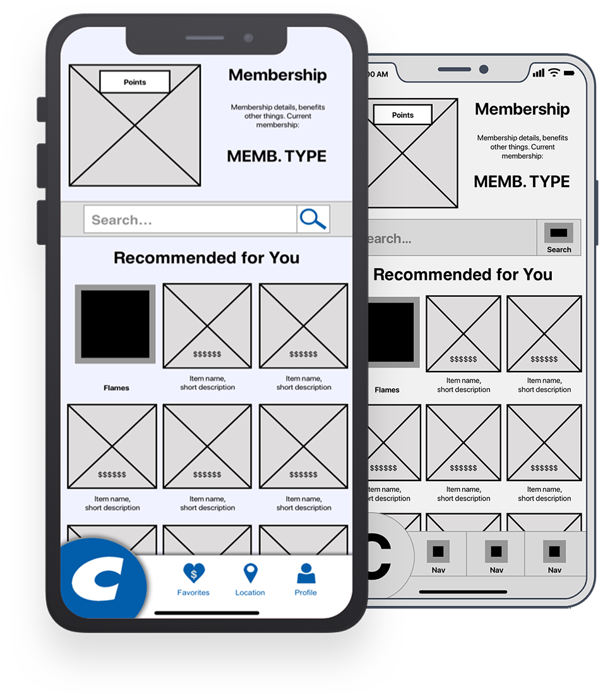

Costco
Mobile App Interaction Design
Project Overview
This project was a conceptual redesign of the Costco app. By implementing user research and user centered design practices, the team would create an app that is more effective than the current Costco App.
Duration: Two weeks.
Team:
- Nate Folsom (me) — Interaction Designer
- Amber Barney-Nivon — User Researcher
- Kitty Kennedy — Visual Designer
First Steps
I began by diving into the Costco app and then comparing it with other shopping apps. In addition to Costco, the apps that I looked at were Target, Sam’s Club, and Amazon.


I dug deep into the interactions and UI of each app, looking for must-have features and design patterns for our redesign.
It was immediately clear that the Costco app was currently just a scaled-down version of the Costco website and was not optimized for the mobile experience.
Design Direction
Based on findings from user research we came to the conclusion that the most effective purpose of the Costco app would be strictly for locating deals, coupons, and sales in order to draw more customers to the brick and mortar locations.
KPIs:
The business impact of this redesign would be monitored through an increase in memberships sold, decrease in average time between store visits, and items bought after being saved in-app by a customer.
Feature Prioritization
As a team, we discussed and then voted on features in order to determine what would be in the MVP. The result we arrived at was that the app needed the ability to search for deals, browse deals by category, save deals for later, and locate deals at a specific store. Managing a current membership or purchasing a new one were also deemed necessary.
Usability Tasks
Based on the features we selected, I wrote three tasks to design the app interactions around and prototype.
Tasks:
- Find a deal and save it for later use
- Sign up for a new membership
- Find the saved item from earlier and reveal the barcode for in-store checkout
Design Studio
Keeping the tasks in mind, I hosted a design studio with the team. We sketched out the home screen in order to rapidly ideate our UI elements and what features to put where.


We then discussed our sketches and combined them into one master sketch incorporating everything we found was effective.
Wireframing
Using the results of the design studio, I started wireframing the screens in Sketch.
In order to make sure I wireframed every necessary screen, I wrote screen flows for each task. Each screen flow is a list of the steps that the user would go through to complete each task. Through this process, I could see which screens would be visited and if they required any different display states.
Prototyping
The first step in turning the wireframe into a prototype was updating any necessary UI elements through the use of symbols.
Next I wrote task scenarios in collaboration with the user researcher, which provided specific details for each task. Finally, I uploaded my screens to InVision for usability testing and shared the prototype with the visual designer so that they could create screen mock-ups.
Design Iteration
After the user researcher had completed testing with a handful of users, we met as a team to discuss findings and simple solutions.
One of the most notable changes that had to be made was the use of the large Costco "C" as a navigation button. Users did not recognize it as a button and so it was changed to a more traditional tab bar.
Next Steps
If this project were to be continued, mobile developers would need to be brought in to begin building the app. The design would also require additional usability testing in order to make sure that users can get the most out of the app.